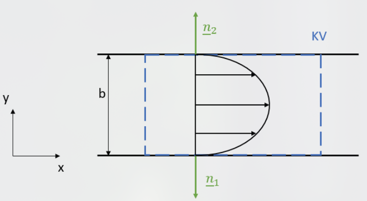
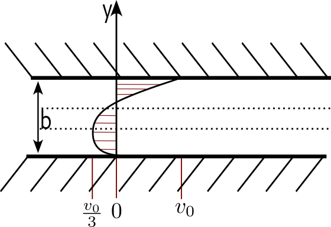

Vortragsübung Technische Strömungslehre
Differntialgleichung im Spalt
Vorbemerkungen zu DGL im Spalt
Spaltströmungen:
- Turbulent:

- Bewegungen quer zur Hauptströmung

- Laminar:
- Keine Bewergungen quer zur Hauptströmung
- Voll ausgebildet: Keine Änderung der Strömung in Strömungsrichtung
- 2D - Strömung
- Viskosität: Zähigkeit eines Fluids
- dynamische Viskosität: \(\mu \left[ \frac{kg}{ms}\right]\)
- kinematische Viskosität: \(\upsilon \left[ \frac{m²}{s}\right]\)
- \(\mu = \rho \cdot \upsilon\)
- Newton’sches Fluid: linear viskoses Fließverhalten: \(\tau = \mu \frac{\partial u}{\partial y}\)
Vorbemerkungen zu DGL im Spalt
DGL einer stationären, inkompressiblen 2D-Spaltströmung
- Massenbilanz: \(\frac{\partial u}{\partial x}+\frac{\partial v}{\partial y} = 0\)
- Impulsbilanz:
- \(x\)-Richtung: \(\rho \left(u \frac{\partial u}{\partial x} + v \frac{\partial u}{\partial y} \right) = \rho g_x - \frac{\partial p}{\partial x} + \mu\left(\frac{\partial^2 u}{\partial x^2}+\frac{\partial^2 u}{\partial y^2}\right)\)
- \(y\)-Richtung: \(\rho \left(u \frac{\partial v}{\partial x} + v \frac{\partial v}{\partial y} \right) = \rho g_y - \frac{\partial p}{\partial y} + \mu\left(\frac{\partial^2 v}{\partial x^2}+\frac{\partial^2 v}{\partial y^2}\right)\)
- Laminar: \(v=0 => \frac{\partial v}{\partial y} = 0 => \frac{\partial u}{\partial x}= 0\)
- Hydrostatische Druckverteilung
- 
- \(x\)- Richtung: \(- \frac{\partial p}{\partial x} + \mu \frac{\partial^2 u}{\partial y^2} = 0\)
- \(y\)- Richtung: \(\rho g_y = \frac{dp}{dy}\)
Beiblatt Differentialgleichungen
Bestimmung des Vorzeichens der aus der Schubspannung resultierenden Kraft vom Körper auf das Fluid
- Annahmen:
- Die Strömung ist stationär, laminar und voll ausgebildet.
- Möglichkeit 1: Bestimmung des Vorzeichens aus der Anschauung:
- Das Fluid wird an den Stellen \(y = 0\) und \(y = b\) abgebremst.
- => Es muss eine Kraft auf das Fluid in negativer Richtung wirken.
Beiblatt Differentialgleichungen
Bestimmung des Vorzeichens der aus der Schubspannung resultierenden Kraft vom Körper auf das Fluid
Möglichkeit 2: Bestimmung des Vorzeichens rechnerisch über \(F_{S,\tau}\)
- \(F_{S,\tau} = \int_S \tau \cdot dS = \int_S \tau \cdot n \, dS = \int_S \begin{pmatrix} \tau_{xx} & \tau_{xy} \\ \tau_{yx} & \tau_{yy} \end{pmatrix} \cdot \begin{pmatrix} n_x \\ n_y \end{pmatrix} dS\)
Möglichkeit 2: Bestimmung des Vorzeichens rechnerisch über \(F_{S,\tau}\)
\(F_{S,\tau} = \int_S \tau \cdot dS = \int_S \tau \cdot n \, dS = \int_S \begin{pmatrix} \tau_{xx} & \tau_{xy} \\ \tau_{yx} & \tau_{yy} \end{pmatrix} \cdot \begin{pmatrix} n_x \\ n_y \end{pmatrix} dS\)
\(= \int_S \begin{pmatrix} \tau_{xx}n_x + \tau_{xy}n_y \\ \tau_{yx}n_x + \tau_{yy}n_y \end{pmatrix} dS\)
Möglichkeit 2: Bestimmung des Vorzeichens rechnerisch über \(F_{S,\tau}\)
\(F_{S,\tau} = \int_S \tau \cdot dS = \int_S \tau \cdot n \, dS = \int_S \begin{pmatrix} \tau_{xx} & \tau_{xy} \\ \tau_{yx} & \tau_{yy} \end{pmatrix} \cdot \begin{pmatrix} n_x \\ n_y \end{pmatrix} dS\)
\(= \int_S \begin{pmatrix} \tau_{xx}n_x + \tau_{xy}n_y \\ \tau_{yx}n_x + \tau_{yy}n_y \end{pmatrix} dS\)
- \(\text{mit } n_x = 0:\)
Möglichkeit 2: Bestimmung des Vorzeichens rechnerisch über \(F_{S,\tau}\)
\(F_{S,\tau} = \int_S \tau \cdot dS = \int_S \tau \cdot n \, dS = \int_S \begin{pmatrix} \tau_{xx} & \tau_{xy} \\ \tau_{yx} & \tau_{yy} \end{pmatrix} \cdot \begin{pmatrix} n_x \\ n_y \end{pmatrix} dS\)
\(= \int_S \begin{pmatrix} \tau_{xx}n_x + \tau_{xy}n_y \\ \tau_{yx}n_x + \tau_{yy}n_y \end{pmatrix} dS\)
- \(\text{mit } n_x = 0:\)
\(F_{S,\tau} = \int_S \begin{pmatrix} \tau_{xy}n_y \\ \tau_{yy}n_y \end{pmatrix} dS = \int_S \begin{pmatrix} \mu \left(\frac{\partial v}{\partial x} + \frac{\partial u}{\partial y}\right) n_y \\ 2\mu \frac{\partial v}{\partial y} n_y \end{pmatrix} dS\)
Möglichkeit 2: Bestimmung des Vorzeichens rechnerisch über \(F_{S,\tau}\)
\(F_{S,\tau} = \int_S \tau \cdot dS = \int_S \tau \cdot n \, dS = \int_S \begin{pmatrix} \tau_{xx} & \tau_{xy} \\ \tau_{yx} & \tau_{yy} \end{pmatrix} \cdot \begin{pmatrix} n_x \\ n_y \end{pmatrix} dS\)
\(= \int_S \begin{pmatrix} \tau_{xx}n_x + \tau_{xy}n_y \\ \tau_{yx}n_x + \tau_{yy}n_y \end{pmatrix} dS\)
- \(\text{mit } n_x = 0:\)
\(F_{S,\tau} = \int_S \begin{pmatrix} \tau_{xy}n_y \\ \tau_{yy}n_y \end{pmatrix} dS = \int_S \begin{pmatrix} \mu \left(\frac{\partial v}{\partial x} + \frac{\partial u}{\partial y}\right) n_y \\ 2\mu \frac{\partial v}{\partial y} n_y \end{pmatrix} dS\)
- \(\text{mit } v = 0 \text{ (laminar, voll ausgebildet):}\)
Möglichkeit 2: Bestimmung des Vorzeichens rechnerisch über \(F_{S,\tau}\)
\(F_{S,\tau} = \int_S \tau \cdot dS = \int_S \tau \cdot n \, dS = \int_S \begin{pmatrix} \tau_{xx} & \tau_{xy} \\ \tau_{yx} & \tau_{yy} \end{pmatrix} \cdot \begin{pmatrix} n_x \\ n_y \end{pmatrix} dS\)
\(= \int_S \begin{pmatrix} \tau_{xx}n_x + \tau_{xy}n_y \\ \tau_{yx}n_x + \tau_{yy}n_y \end{pmatrix} dS\)
- \(\text{mit } n_x = 0:\)
\(F_{S,\tau} = \int_S \begin{pmatrix} \tau_{xy}n_y \\ \tau_{yy}n_y \end{pmatrix} dS = \int_S \begin{pmatrix} \mu \left(\frac{\partial v}{\partial x} + \frac{\partial u}{\partial y}\right) n_y \\ 2\mu \frac{\partial v}{\partial y} n_y \end{pmatrix} dS\)
- \(\text{mit } v = 0 \text{ (laminar, voll ausgebildet):}\)
\(F_{S,\tau} = \int_S \begin{pmatrix} \mu \frac{\partial u}{\partial y} n_y \\ 0 \end{pmatrix} dS\)
Aufgabe 16 a) (Basiswissen)
gesucht: \(\frac{\partial p}{\partial x}\) damit \(Q = 0\)
gesucht: \(\frac{\partial p}{\partial x}\) damit \(Q = 0\)
\(Q = \int_{A} u_A dA\)
gesucht: \(\frac{\partial p}{\partial x}\) damit \(Q = 0\)
\(Q = \int_{A} u_A dA = t \int u(y) dy = 1 \int_{0}^{b} u(y) dy\)
gesucht: \(\frac{\partial p}{\partial x}\) damit \(Q = 0\)
\(Q = \int_{A} u_A dA = t \int u(y) dy = 1 \int_{0}^{b} u(y) dy\)
Herleitung \(u(y)\) auf Massen-& Impuslsnilanz für stationäre, imkompressible, laminare Strömung:
- \(- \frac{\partial p}{\partial x} + \mu \frac{\partial^2 u}{\partial y^2} = 0\)
gesucht: \(\frac{\partial p}{\partial x}\) damit \(Q = 0\)
\(Q = \int_{A} u_A dA = t \int u(y) dy = 1 \int_{0}^{b} u(y) dy\)
Herleitung \(u(y)\) auf Massen-& Impuslsnilanz für stationäre, imkompressible, laminare Strömung:
- \(- \frac{\partial p}{\partial x} + \mu \frac{\partial^2 u}{\partial y^2} = 0 => \frac{\partial^2 u}{\partial y^2} =\frac{1 }{\mu } \frac{\partial p}{x}\)
gesucht: \(\frac{\partial p}{\partial x}\) damit \(Q = 0\)
\(Q = \int_{A} u_A dA = t \int u(y) dy = 1 \int_{0}^{b} u(y) dy\)
Herleitung \(u(y)\) auf Massen-& Impuslsnilanz für stationäre, imkompressible, laminare Strömung:
\(- \frac{\partial p}{\partial x} + \mu \frac{\partial^2 u}{\partial y^2} = 0 => \frac{\partial^2 u}{\partial y^2} =\frac{1 }{\mu } \frac{\partial p}{x}\)
\(\int \left( \frac{\partial^2 u}{\partial y^2} =\frac{1 }{\mu } \frac{\partial p}{x} \right) dy\)
gesucht: \(\frac{\partial p}{\partial x}\) damit \(Q = 0\)
\(Q = \int_{A} u_A dA = t \int u(y) dy = 1 \int_{0}^{b} u(y) dy\)
Herleitung \(u(y)\) auf Massen-& Impuslsnilanz für stationäre, imkompressible, laminare Strömung:
\(- \frac{\partial p}{\partial x} + \mu \frac{\partial^2 u}{\partial y^2} = 0 => \frac{\partial^2 u}{\partial y^2} =\frac{1 }{\mu } \frac{\partial p}{x}\)
\(\int \left( \frac{\partial^2 u}{\partial y^2} =\frac{1 }{\mu } \frac{\partial p}{x} \right) dy = \frac{\partial u}{\partial y} = \frac{1}{\mu}\frac{\partial p}{\partial x}y+c_1\)
gesucht: \(\frac{\partial p}{\partial x}\) damit \(Q = 0\)
\(Q = \int_{A} u_A dA = t \int u(y) dy = 1 \int_{0}^{b} u(y) dy\)
Herleitung \(u(y)\) auf Massen-& Impuslsnilanz für stationäre, imkompressible, laminare Strömung:
\(- \frac{\partial p}{\partial x} + \mu \frac{\partial^2 u}{\partial y^2} = 0 => \frac{\partial^2 u}{\partial y^2} =\frac{1 }{\mu } \frac{\partial p}{x}\)
\(\int \left( \frac{\partial^2 u}{\partial y^2} =\frac{1 }{\mu } \frac{\partial p}{x} \right) dy = \frac{\partial u}{\partial y} = \frac{1}{\mu}\frac{\partial p}{\partial x}y+c_1\)
\(\int \left( \frac{1}{\mu} \frac{\partial p}{\partial x} y + c_1 \right) dy = \frac{1}{2 \mu} \frac{\partial p}{x}y^2+c_1 y +c_2\)
gesucht: \(\frac{\partial p}{\partial x}\) damit \(Q = 0\)
\(Q = \int_{A} u_A dA = t \int u(y) dy = 1 \int_{0}^{b} u(y) dy\)
Herleitung \(u(y)\) auf Massen-& Impuslsnilanz für stationäre, imkompressible, laminare Strömung:
\(- \frac{\partial p}{\partial x} + \mu \frac{\partial^2 u}{\partial y^2} = 0 => \frac{\partial^2 u}{\partial y^2} =\frac{1 }{\mu } \frac{\partial p}{x}\)
\(\int \left( \frac{\partial^2 u}{\partial y^2} =\frac{1 }{\mu } \frac{\partial p}{x} \right) dy = \frac{\partial u}{\partial y} = \frac{1}{\mu}\frac{\partial p}{\partial x}y+c_1\)
\(\int \left( \frac{1}{\mu} \frac{\partial p}{\partial x} y + c_1 \right) dy = \frac{1}{2 \mu} \frac{\partial p}{x}y^2+c_1 y +c_2\)
Randbedingungen zur bestimmung der Integrationskonstanten \(c_1\) & \(c_2\):
- \(u(0) = 0\)
- \(u(b) = v_0\)
gesucht: \(\frac{\partial p}{\partial x}\) damit \(Q = 0\)
\(Q = \int_{A} u_A dA = t \int u(y) dy = 1 \int_{0}^{b} u(y) dy\)
Herleitung \(u(y)\) auf Massen-& Impuslsnilanz für stationäre, imkompressible, laminare Strömung:
\(- \frac{\partial p}{\partial x} + \mu \frac{\partial^2 u}{\partial y^2} = 0 => \frac{\partial^2 u}{\partial y^2} =\frac{1 }{\mu } \frac{\partial p}{x}\)
\(\int \left( \frac{\partial^2 u}{\partial y^2} =\frac{1 }{\mu } \frac{\partial p}{x} \right) dy = \frac{\partial u}{\partial y} = \frac{1}{\mu}\frac{\partial p}{\partial x}y+c_1\)
\(\int \left( \frac{1}{\mu} \frac{\partial p}{\partial x} y + c_1 \right) dy = \frac{1}{2 \mu} \frac{\partial p}{x}y^2+c_1 y +c_2\)
Randbedingungen zur bestimmung der Integrationskonstanten \(c_1\) & \(c_2\):
- \(u(0) = 0\)
- \(u(b) = v_0\)
- => \(c_2= 0\)
- => \(c_1 = \frac{v_0}{b} - \frac{1}{2 \mu} \frac{\partial p}{\partial x}b\)
gesucht: \(\frac{\partial p}{\partial x}\) damit \(Q = 0\)
\(Q = \int_{A} u_A dA = t \int u(y) dy = 1 \int_{0}^{b} u(y) dy\)
Herleitung \(u(y)\) auf Massen-& Impuslsnilanz für stationäre, imkompressible, laminare Strömung:
\(- \frac{\partial p}{\partial x} + \mu \frac{\partial^2 u}{\partial y^2} = 0 => \frac{\partial^2 u}{\partial y^2} =\frac{1 }{\mu } \frac{\partial p}{x}\)
\(\int \left( \frac{\partial^2 u}{\partial y^2} =\frac{1 }{\mu } \frac{\partial p}{x} \right) dy = \frac{\partial u}{\partial y} = \frac{1}{\mu}\frac{\partial p}{\partial x}y+c_1\)
\(\int \left( \frac{1}{\mu} \frac{\partial p}{\partial x} y + c_1 \right) dy = \frac{1}{2 \mu} \frac{\partial p}{x}y^2+c_1 y +c_2\)
Randbedingungen zur bestimmung der Integrationskonstanten \(c_1\) & \(c_2\):
- \(u(0) = 0\)
- \(u(b) = v_0\)
- => \(c_2= 0\)
- => \(c_1 = \frac{v_0}{b} - \frac{1}{2 \mu} \frac{\partial p}{\partial x}b\)
- \(u(y) = \frac{1}{2 \mu} \frac{\partial p}{\partial x} \left( y^2 -by\right) + \frac{v_0}{b}y\)
Aufabe 16 a) (Basiswissen)
- \(Q = 0\)
- \(u(y) = \frac{1}{2 \mu} \frac{\partial p}{\partial x} \left( y^2 -by\right) + \frac{v_0}{b}y\)
- \(Q = 0\)
- \(u(y) = \frac{1}{2 \mu} \frac{\partial p}{\partial x} \left( y^2 -by\right) + \frac{v_0}{b}y\)
- \(\int_{0}^{b} u(y) dy = \left[ \frac{1}{2 \mu} \frac{\partial p}{\partial x}\left(\frac{y^3}{3}-b\frac{y^2}{2}\right) + \frac{v_0}{2b}y^2\right]_{0}^{b}\)
- \(Q = 0\)
- \(u(y) = \frac{1}{2 \mu} \frac{\partial p}{\partial x} \left( y^2 -by\right) + \frac{v_0}{b}y\)
- \(\int_{0}^{b} u(y) dy = \left[ \frac{1}{2 \mu} \frac{\partial p}{\partial x}\left(\frac{y^3}{3}-b\frac{y^2}{2}\right) + \frac{v_0}{2b}y^2\right]_{0}^{b} = \frac{v_0}{2}b - \frac{1}{12 \mu}\frac{\partial p}{\partial x}b^3\)
- \(Q = 0\)
- \(u(y) = \frac{1}{2 \mu} \frac{\partial p}{\partial x} \left( y^2 -by\right) + \frac{v_0}{b}y\)
- \(\int_{0}^{b} u(y) dy = \left[ \frac{1}{2 \mu} \frac{\partial p}{\partial x}\left(\frac{y^3}{3}-b\frac{y^2}{2}\right) + \frac{v_0}{2b}y^2\right]_{0}^{b} = \frac{v_0}{2}b - \frac{1}{12 \mu}\frac{\partial p}{\partial x}b^3\)
- Auflösen nach \(\frac{\partial p}{\partial x}\):
- =>\(\frac{\partial p}{\partial x}= \frac{6 \mu v_0}{b^2}\)
- mit \(v_0 = 0.12 \frac{\mathrm{m}}{\mathrm{s}}\) und \(\mu = 1.5 \mathrm{Pa} \cdot \mathrm{s}\)
- =>\(\frac{\partial p}{\partial x}= \frac{6 \mu v_0}{b^2} = 30000 \left[\frac{Pa}{m}\right]\)
Aufgabe 16 b) (Basiswissen)
- gesucht: \(u(y)\), \(\tau (y)\) => Kurvendiskussion
- gesucht: \(u(y)\), \(\tau (y)\) => Kurvendiskussion
- \(\tau = \mu \frac{\partial u}{\partial y} = \frac{\partial p}{\partial x} \left( y -\frac{b}{2}\right) +\mu \frac{v_0}{b}\)
- gesucht: \(u(y)\), \(\tau (y)\) => Kurvendiskussion
- \(\tau = \mu \frac{\partial u}{\partial y} = \frac{\partial p}{\partial x} \left( y -\frac{b}{2}\right) +\mu \frac{v_0}{b}\)
- Extremwerte von \(u(y)\) bei \(\tau (y) = 0\)
- gesucht: \(u(y)\), \(\tau (y)\) => Kurvendiskussion
- \(\tau = \mu \frac{\partial u}{\partial y} = \frac{\partial p}{\partial x} \left( y -\frac{b}{2}\right) +\mu \frac{v_0}{b}\)
- Extremwerte von \(u(y)\) bei \(\tau (y) = 0\)
- \(\frac{\partial p}{\partial x} \left( y^* -\frac{b}{2}\right) +\mu \frac{v_0}{b} = 0\)
- gesucht: \(u(y)\), \(\tau (y)\) => Kurvendiskussion
- \(\tau = \mu \frac{\partial u}{\partial y} = \frac{\partial p}{\partial x} \left( y -\frac{b}{2}\right) +\mu \frac{v_0}{b}\)
- Extremwerte von \(u(y)\) bei \(\tau (y) = 0\)
- \(\frac{\partial p}{\partial x} \left( y^* -\frac{b}{2}\right) +\mu \frac{v_0}{b} = 0\)
- \(=> y^* = \frac{b}{3}\)
- \(u(y^*) = - \frac{v_0}{3}\)
- gesucht: \(u(y)\), \(\tau (y)\) => Kurvendiskussion
- \(\tau = \mu \frac{\partial u}{\partial y} = \frac{\partial p}{\partial x} \left( y -\frac{b}{2}\right) +\mu \frac{v_0}{b}\)
- Extremwerte von \(u(y)\) bei \(\tau (y) = 0\)
- \(\frac{\partial p}{\partial x} \left( y^* -\frac{b}{2}\right) +\mu \frac{v_0}{b} = 0\)
- \(=> y^* = \frac{b}{3}\)
- \(u(y^*) = - \frac{v_0}{3}\)
- 
Aufgabe 17 a)
- Bestimmung von \(\tau(x)\) und \(v(x)\):
- \(\int \frac{\partial \tau}{\partial x} dx => \tau(x) = \frac{\partial p}{\partial y}x - \rho g x + c_1\)
- \(\frac{1}{\mu} \int \tau dx => v(x) = \frac{1}{\mu} \frac{\partial p }{\partial y } \frac{x^2}{2} - \frac{1}{\mu} \rho g \frac{x^2}{2} + \frac{c_1x}{\mu} +c_2\)
- mit \(v(a) = -v_0\), \(v(-a)=2v_0\)
- \(\frac{1}{\mu} \frac{\partial p }{\partial y } \frac{a^2}{2} - \frac{1}{\mu} \rho g \frac{a^2}{2} + \frac{c_1a}{\mu} +c_2 = -v_0\)
- \(\frac{1}{\mu} \frac{\partial p }{\partial y } \frac{a^2}{2} - \frac{1}{\mu} \rho g \frac{a^2}{2} - \frac{c_1a}{\mu} +c_2 = 2v_0\)
- => \(c_1 = -\frac{3 v_0 \mu}{2a}\)
- => \(c_2 = \frac{v_0}{2}-\frac{a^2}{2 \mu}\left(\frac{\partial p}{\partial y} -\rho g\right)\)
- \(v(x) = \frac{1}{\mu} \frac{\partial p}{\partial y} \cdot \frac{x^2}{2} - \rho g \cdot \frac{x^2}{2} + \frac{x}{\mu} \cdot \frac{-3v_0}{2a} + \frac{v_0}{2}- \frac{a^2}{2\mu}\left(\frac{\partial p}{\partial y} - \rho g \right)\)
- \(\tau(x) = \frac{\partial p}{\partial y} x - \rho g x - \frac{3 v_0 M}{2a}\)
Aufgabe 17 b)
- ges: \(v(0)\) wenn \(\tau \left(\frac{a}{-2}\right)\) & Verläufe \(u(x)\), \(\tau(x)\)
- \(v(0) = \frac{v_0}{2} - \frac{a^2}{2 \mu} \left( \frac{ \partial p}{\partial y} - \rho g \right)\)
- Bestimmung \(\frac{\partial p}{\partial y}\) aus \(\tau\left(\frac{a}{-2}\right) = 0\) :
- \(\tau\left(\frac{a}{-2}\right) = \frac{\partial p}{\partial y} \cdot \frac{a}{-2} + \rho g \frac{a}{-2} - \frac{3 v_0 M}{2a}=0\)
- \(\frac{\partial p}{\partial y}= \rho g - \frac{3 v_0 M}{a^2}\)
- \(v(0) = \frac{v_0}{2} - \frac{a^2}{2 \mu} \left( \rho g - \frac{3 v_0 M}{a^2} - \rho g \right) = \frac{v_0}{2} + \frac{3 v_0}{2} = 2 v_0\)
Aufgabe 18 a)
- geg: \(u(\frac{\partial P}{\partial x}), \tau(\frac{\partial P}{\partial x})\)
Partielle Ableitungen - \(\frac{\partial^2 u}{\partial y^2} = \frac{1}{\mu} \frac{\partial P}{\partial x} \quad \int y\)
\(\frac{\partial u}{\partial y} = \frac{1}{\mu} \frac{\partial P}{\partial x} y + C_1 \quad \int y\)
\(u = \frac{1}{2\mu} \frac{\partial P}{\partial x} y^2 + C_1 y + C_2\)
- oben: \(u_B = \frac{1}{2\mu_B} \frac{\partial P}{\partial x} y^2 + C_1 y + C_2\)
\(\tau_B = \frac{\partial P}{\partial x} y + \mu_B C_1\)
- unten: \(u_A = \frac{1}{2\mu_A} \frac{\partial P}{\partial x} y^2 + C_3 y + C_4\)
\(\tau_A = \frac{\partial P}{\partial x} y + \mu_A C_3\)
4 Unbekannte => 4 Randbedingungen
\(u_B(b) = 0 \quad \longrightarrow \quad \frac{1}{2\mu_B} \frac{\partial P}{\partial x} b^2 + \frac{\mu_A C_3}{\mu_B} b + C_2 = 0 \quad (1)\)
\(u_A(-b) = 0 \quad \longrightarrow \quad \frac{1}{2\mu_A} \frac{\partial P}{\partial x} b^2 + C_3(-b) + C_2 = 0 \quad (2)\)
\(u_B(0) = u_A(0) \quad \longrightarrow \quad C_2 = C_4 \quad (3)\)
\(\tau_B(0) = \tau_A(0) \quad \longrightarrow \quad \mu_B C_1 = \mu_A C_3 \quad \Rightarrow \quad C_1 = \frac{\mu_A C_3}{\mu_B} \quad (4)\)
Aufgabe 18 a)
- \((1) - (2):\)
\(\quad \frac{\partial P}{\partial x} b^2 \frac{1}{2} \left(\frac{1}{\mu_B} - \frac{1}{\mu_A}\right) + b C_3 \left(\frac{\mu_A}{\mu_B} + 1\right) = 0\)
- => \(C_3 = \frac{\partial P}{\partial x} \frac{b}{2} \frac{\mu_B - \mu_A}{(\mu_B + \mu_A)\mu_A}\)
- in (4) einsetzen:
- \(\quad C_1 = \frac{\partial P}{\partial x} \frac{b}{2} \frac{\mu_B - \mu_A}{(\mu_B + \mu_A)\mu_B}\)
- in (2) einsetzen:
- \(\quad C_2 = -b^2 \frac{\partial P}{\partial x} \frac{1}{M_B + M_A}=C_4\)
- \(\tau_{AB} = \frac{\partial p}{\partial x} y + \frac{\partial p}{\partial x} \frac{b}{2}\frac{M_B-M_A}{M_B+M_A}\)
Aufgabe 18 b)
\(u_B\), \(u_A\), \(\tau_{AB}\)
\(\tau_{AB} = \left(\frac{\partial P}{\partial x}\right) y + \frac{\partial P}{\partial x} \frac{b}{2} \frac{\mu_B - \mu_A}{\mu_B + \mu_A}\)
\(\tau_{AB}(y^*) = 0\)
\(\frac{\partial P}{\partial x} y^* + \frac{\partial P}{\partial x} \frac{b}{2} \frac{\mu_B - \mu_A}{\mu_B + \mu_A} = 0\)
\(y^* = \frac{b}{2} \frac{\mu_A - \mu_B}{\mu_B + \mu_A} \rightarrow 0\) mit \(\mu_A = \mu_B\)